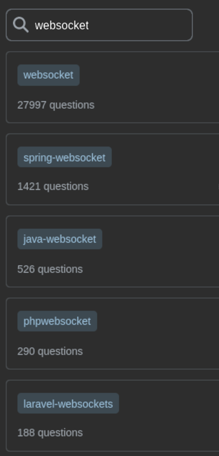

Server-Sent Events
September 29, 2023

tasos@kadena.io
September 29, 2023
whois “Tasos Bitsios”whois “Kadena”
Notifications
Async job progress

Real-time ticker data
ü•≥ SSE is 19 years old
üîß 13 years of mainstream support
History: W3C Publication History
Current: HTML Living Standard § 9.2


Contemporary to HTML5, <video>, Web sockets, Web
workers, …
Play-along repository:
github.com/takadenoshi/sse-presentation
Useful for examining behaviors, browser implementation differences.
Repo link in QR ➡

The simplest server-sent event stream specifies just
data events.
Example with 2 events:
> GET /stream/hello HTTP/1.1
< HTTP/1.1 200 OK
< Content-Type: text/event-stream
< data: Hello\n\n
< data: ReactLive are you there?\n\nContent-Type is text/event-stream
Events separated by two newline characters \n\n
Data is encoded in UTF-8 (mandatory)
Playground: “simple” scenario
Server-sent events are consumed with EventSource:
let i=0;
const source = new EventSource("http://localhost:3001/stream/simple");
// "message" event emitted for each "data" event received
source.addEventListener("message", event => console.log(++i, event.data), false);The exmaple from the previous slide would trigger the callback twice, logging:
< HTTP/1.1 200 OK
< Content-Type: text/event-stream
< data: Hello\n\n
< data: ReactLive are you there?\n\n
1 Hello
2 ReactLive are you there?You can “namespace” your events using the event field
with any custom name:
< event: goal
< data: "ARS-LIV 1-1 45"\n\n
< event: spectator-chat
< data: "Did you see that ludicrous display just now"\n\nThe goal and spectator-chat events are
handled separately on the frontend
By default*, EventSource consumers will reconnect if the connection is interrupted.
* with implementation-specific caveats
The default reconnection timeout is up to each browser (empirically: between 3-5 s.)
The reconnection timeout can be customized.
Emit a retry: field in any of the events:
< retry: 2500
< data: Hello!\n\nPlayground: “Retry-flaky” scenario
A server can signal “do not reconnect”:
Content-Type header other than
text/event-stream2xx response other than 200
Playground: “Not SSE” scenario
Events can include an id field with any UTF-8 string as
value.
Connection interrupted? Reconnection header
Last-Event-ID set to the last id received.
This allows the server to resume gracefully.
If this is the last event received in a stream that disconnects:
< id: data-0
< retry: 5000
< data: Data Zero event\nThen the connection timeout will be 5 seconds, and the
Last-Event-ID header will be set to
data-0.
> GET /stream/notifications HTTP/1.1
> Host: localhost:3001
> Last-Event-ID: data-0Playground: “notifications” scenario
Entire SSE gramar: 4+1 fields
retry: 2000id: 0data: Hello\n\n:I am a ...event: statusYou can subscribe to custom events (e.g. status) with
.addEventListener:
const source = new EventSource('/stream/hello');
// [name]: triggers for custom named event, here: "status"
source.addEventListener(
"status",
({ data }) => console.log("custom event: status", JSON.parse(data)),
false,
);
// as before, un-named data events
source.addEventListener(
"message",
(event) => { console.log("data event", event.data); },
false,
);Subscribe to open and error for connection
management:
constructor(url, { withCredentials: boolean })
withCredentials: instantiate with CORS credentials
(default: false)open: on connectionerror: on error/disconnectionmessage: on generic data: event received<custom>: on named event receivedaddEventListener(event_name: string, (event: Event) => void, bubbles: boolean)CONNECTING (0) | OPEN (1) |
CLOSED(2)
Single bit of information: “error”
callback signature is (event: Event) => void
No reason or message can be derived
Some disconnections can be “fatal”, cancelling the reconnection policy.
Inspect readyState to find out EventSource’s
intent:
It is not possible to set custom HTTP headers on SSE requests using
EventSource
Per-hostname connection quota over HTTP/1.1
Max number of connections: 6
Browser-wide enforcement (shared by all tabs)
Too much SSE without planning -> choking your performance
Default reconnection behavior implementation issue:
When a network error is encountered:
Test it out in the playground repo:
Recommendation: consider handling reconnections explicitly
Proxies, load balancers and other networking middleware can kill idle connections after a short while.
Two approaches to fix this:
You can emit a comment (any line starting with a colon
:)
< :bumpGood enough to keep connection alive.
EventSource won’t emit any event.
Proxies, load balancers and other networking middleware can kill idle connections after a short while.
Two approaches to fix this:
Emit a custom “heartbeat” or “ping” event every 15 seconds or so:
< event: heartbeat
< data: ""(data field must be present)
The client can listen to this event and use it to detect stale connections:
“expect heartbeats every N seconds, otherwise reconnect”
Preferred approach, especially for important payloads.
Firefox has yet to implement support for EventSource in its Service Worker context.
Future people can track the present validity of this statement here.
✅ But you can use it in a SharedWorker
If no event is emitted in the subsequent connection’s lifetime, the Last-Event-ID is reset.
When a reconnected session is initialized with
Last-Event-ID: Some-id
And the connection emits no messages for its lifetime,
Then the Last-Event-ID value is reset.
Keep requesting new data on an interval
Benefit: Doesn’t “hog” a connection (HTTP/1.1)
“Hanging GET” - server keeps connection open/hanging until there is something to write.
Client loops the GET request.
Blockchain stuff usually comes with lots of polling.
Kadena’s Chainweb is 20 “braided” chains -> 20x polling threads (worst case)
[QR] Presentation source & SSE playground - Github
Chainweb-stream-client SSE Consumer
§ 9.1 MessageEvent Interface - HTML Living Standard
§ 9.2 Server-Sent Events - HTML Living Standard
Monospace font: Kode
mono by Kadena’s Isa Ozler

Comments
Any lines starting with
:(colon) are interpreted as commentsThese are ignored on the client-side